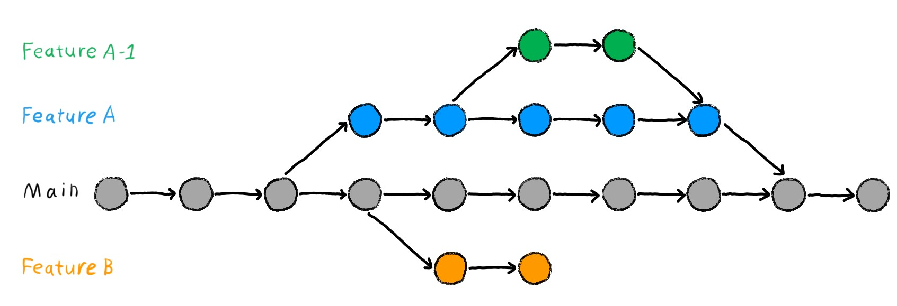

Terminal
git --versionIn this chapter, you will learn the basics of using the distributed version control system Git in RStudio.
In this chapter you will get to know the basic structure of Git and how you can use it in your own projects. This is simply meant as a crashcourse to understand the basics and only covers how to do so in RStudio. If you would like a more comprehensive approach to learning Git and version control, we highly recommend the Version Control Book. It was created by some of the same people as the Repro book, that you are currently reading and follows a similar structure. It does focus on teaching Git using the command line (see Tip 6.1) but can be a good place to go if you have questions, need to fix a mistake or simply want to learn more about the beautiful world of version control using Git. Another great resource, that is even more comprehensive and heavily informed the Version Control Book, is the Turing Way.
You are most likely used to interact with programs on your computer through graphical user interfaces (GUIs) where you can select options through graphical icons and visual indicators using the computer mouse. However, computers have historically been controlled through text-based commands typed into command-line interfaces (CLIs) using the computer keyboard. To this day, the command line has persisted as a reliable (and sometimes the only) way to effectively interact with computer programs. - Wittkuhn and Pagenstedt (2024), chapter on the command line
It is possible to work with Git completely through the command line. However, the command line might seem unintuitively for many people. Thus, we aim to use git as much as possible with GUIs as RStudio. Therefore, we aim to keep the chapter as user-friendly as possible. Nevertheless, we might need to work with the command line for specific commands that do not have a respective button in RStudio.
To open a command-line tool on a Mac there are multiple ways. Here we show you three ways:
Open Finder, click on Applications, then on Utilities. In the folder Utilities, you will find the application Terminal. Open it, and you can use the command line.
Open Finder, go to the GO menu, then on Utilities. Then, open the Terminal.
Open the Launchpad, hit Terminal into the search bar, and open it.
Press the Windows-Button so that your search pane opens on the computer. Type cmd into the search field. Then, the command line should pop up. Hit Enter and you open the command line.
Opposed to MacOS, the default command line in Windows does not work with Git. To work with Git on a Windows computer, you have to install Git Bash first (Section 6.2.1) and then open Git Bash. Then you can work with a git-friendly command line on Windows (see Figure 6.1).
git --version Used under a CC-BY 4.0 license.
You’ve likely come across the illustration below before in this book, but it helps illustrate why using version control can make your workflow and collaboration that much smoother.

Version control allows you to keep working on the same file whilst not losing your previous versions. Just imagine you are working on a code that’s working perfectly fine, let’s call this 01_code. You now add a new feature to 01_code for which you change parts of the previous code. Accidentally, you’ve created a bug and now your whole code doesn’t run anymore. You’ve changed too much to simply remember what you would need to do to get back to 01_code. Wouldn’t it be great to travel back in time to your working 01_code? In a way version control allows you to do this. It essentially allows you to take snapshots of your work that you can go back to at any point.
Git is a software that allows you to do just that.
Git as version control software is able to follow different versions of code and data. Thus, it provides information about code and data evolved over time. Hence, it becomes way easier to understand which code and data was used to create e.g. a particular figure. Further, Git saves a version history enabling us to understand the changes made, the purpose of analyses, even months or years later. Thus, we can remarkably reduce process-based reproducibility errors when using Git (Section 1.1.1) Meanwhile, Git hides older versions which keeps your project structure organized. However, you can still access them if you need them (The Turing Way Community 2022).
Git is not good at tracking very large files such as data sets, which can slow it down quite a bit. It is also not very good at tracking binary files like videos, images or ‘.docx’ files. But if you want to track written work you can use ‘.md’ (Markdown) files instead.
To use Git, you have to install it first. Depending on your operating system, this will look different.
On recent versions of MacOS (> MacOS Sierra 10.12) Git should come pre- installed. To check whether Git is pre-installed, head to your command-line/Terminal and enter the following command.
Terminal
git --versionWhen Git is already installed, you should see an output similar to below.
Output
git version 2.39.2 (Apple Git-143)When Git is not installed, you will receive a prompt asking you if you want to install it along Xcode command line deleveloper tools. You will also be asked for your administrator password. Make sure that you have enough storage on your computer to install the Xcode command line developer tools.
Maybe, you will receive an error message called xcrun:error. If so, check out the Git installation instructions in the version control book (Wittkuhn and Pagenstedt 2024). The authors describe how to fix it.
On Git for Windows you can download Git and Bash in one go. The Bash shell is a commonly used command-line interface, which can be useful for more complex commands. On the website simply click on the Download button and after it has finished downloading, double-click on the installer to start the installation process. You can accept all the default settings if you have no special requirements such as a specific installation destination. After running through all the settings, click Install. Once done installing, the Bash shell will open automatically. To confirm everything worked correctly and Git is installed, run the following command, which should return the Git version.
Terminal
git --versionOutput
git version 2.46.0.windows.1.gitconfigWhen you first start using Git, there are some things you need to set up in the .gitconfig file. This file stores all your specific settings. Using the command line, you first need to let Git know who you are. Your username and email address will be associated with the changes you’re tracking with Git. This is useful, as it allows others to trace back who made which changes. As you will later use this email address to connect with GitHub, make sure you either use the same email as the one in your GitHub account or use an email address you would be happy to use for your GitHub profile as well!
To set this up, enter the command below in the command line, replacing ‘Your Name’ and ‘Your Email’ with your own.
Terminal
git config --global user.name "Name"
git config --global user.email Your EmailBeware that your username and email address will be publicly visible if you make changes to a public project on e.g., GitHub. This is very difficult to change or remove later on. This is relevant if you plan on potentially sharing private projects later on. Consider if you’d rather use a pseudonym for your username and email address.
The next step is not strictly necessary for functionality but comes highly recommended. Some older versions of Git still use the terminology of “master” to define the most important branch (There will be more explanation on what branches are later on). To make the terminology of Git less offensive and more inclusive, there has been a shift to refer to “main” instead. To ensure your Git will refer to “main” instead of “master”, simply run this in your command line:
Terminal
git config --global init.defaultBranch mainIn the world of Git, your project is referred to as a repository. More specifically repository, or repo for short, refers to the folderstructure that you are tracking with Git, which usually is the same as your project. Sometimes project and repo are used interchangeably but when using Git and GitHub, your project is called a repository.
Git is well integrated in RStudio and offers a GUI for Git. As long as you have Git installed on your computer, it is very easy to use it in RStudio and add it to existing projects. Whilst originally Git is a command line based program, using the GUI of RStudio makes it more intuitive and can be faster for standard commands than typing them out. However, for some actions, using the command line is still necessary.
Before setting up Git in an existing R-project, make sure you are in your intended project in RStudio 1. Now, to set up Git, simply go to Tools > Version Control > Project Setup… (see below) and choose Git as the version control system in the Pop-up window. Confirm both the initialization of a Git repository in your project, as well as the RStudio restart.
Well done, now you should have an additional tab for Git next to your environment pane, which is usually found in the upper right corner. It should look something like below.
Here you can see all of your projects file, which so far are not tracked by Git.
.gitignore fileNow that you’ve added Git to your repository, a .gitignore file was automatically added to it. This file lists all the files that are not tracked aka ignored by Git. You can and should add files that you don’t want to be included in the version history in here.
This is useful to:
Keep your repository free of unnecessary files, that would only clutter it. You should ignore files that can be recreated by using code from your repository, e.g., plots you created in your data analysis.
Keep private or sensitive information out of the version control history, which you might later share.
Not slow down working with your repository by adding big files, such as datasets to the .gitignore file. Additionally, you shouldn’t need to track changes when it’s reproducible from your raw data and code.
To add files to .gitignore, just open the .gitignore file and list the files you don’t want to be tracked in it.
.pdf files inside your repository.
misc folder inside your repository.
There will already be some files listed there that are being ignored by default. Your .gitignore should look something like this.
The simple addition to the .gitignore file of the desired files and folders (see Section 6.3.2) does only work conveniently, if they are added to the .gitignore file before the files and folders were created. However, it requires an extra step to add files and folders to the .gitignore file that have been tracked before. Consider you have a folder (e.g. misc) in your repository that you want to ignore but it was tracked before by git (see Figure 6.3). If you just add misc to the .gitignore file, what happens, is that git stops tracking changes for all new files and folders in that folder. However, the files and subfolders that were in the misc folder before, are still tracked by git. You have to use the command line to not track files and folders that have been tracked before2.
To withdraw the tracking of a folder, you have to do two things:
You have to add the folder in the .gitignore file. To do so, write the name of your folder in a new line of the .gitignore file
You have to remove the folder from the cache specifying which documents Git is tracking. To do so, type the command below in to your command line.
Terminal
1git rm --cache -r <folder-name><folder-name> by the name of your folder
The -r in that command stands for recursive and specifies that all subfolders and files in the target folder will be ignored, too.
Withdraw tracking from the folder raw_data that is a subfolder of the the data folder.
.gitignore
data/raw_dataTerminal
git rm --cache data/raw_dataTo withdraw the tracking of a file, you also have to do two things:
You have to add the folder in the .gitignore file. To do so, write the name of your folder in a new line of the .gitignore file
You have to remove the file from the cache specifying which documents Git is tracking. However, the command is slightly different in comparison to the one for folders.
Terminal
1git rm --cache <file-name><file-name> by the name of your file. Remember to put the file extension on the name.
The -r is not required anymore, since a file cannot contain other subfolders and files.
Withdraw tracking from the file participant-003_feedback.pdf that lies in the folder feedback which, in turn, is a subfolder of misc.
.gitignore
misc/feedback/participant-003_feedback.pdfTerminal
git rm --cache -r misc/feedback/participant-003_feedback.pdfAs you should have figured out, it is useful to think about which files and folders you want or do not want to track before setting up your project. Nevertheless, changes might arise during your project and this helps you to keep your version control history clean, even when circumstances change.
When using Git, the most basic workflow is:
Staging is essentially telling Git which files and changes you want it to track in your next commit. It is like adding items to your shopping cart but not yet buying them. You have to do this before being able to create a commit. When staging files, keep in mind what changes and files to include in a single commit. This can be all the files that you’ve changed in order to fix a bug or to include a new feature, but could be divided up into smaller commits as well.
In order to stage a file in RStudio, simply tick the box on the left of the file name in the Git pane. There, all your files that have saved changes but aren’t yet tracked with Git will show up. Logically, after you have first initialized Git in a repository, all the files will show up there as they have not yet been tracked. You can go ahead and stage all the files and then click Commit in the Git pane. Below you can see how this could look like.
A commit is like a screenshot of your current work. Everything that you have previously staged will be included in the next commit and makes up that specific version of your repository that you are saving.

In RStudio, after having staged your files you can simply make a commit by pressing the Commit button in the Git pane. Now you add a commit message. Figure 6.4 shows how this would look like for the initial commit, including the commit message.

For the commit message, it’s important to be concise and descriptive of what your changes did, as this is what you will later see listed in the commit history. If you do want to go back to a previous version later on, the commit messages need to be understandable enough for you and others to easily spot the correct one. By convention, start your message with a verb in the imperative, e.g., ‘Add’, ‘Fix’, ‘Remove’. Now simply press the Commit button below the message. Congrats, you just created your first commit.
You can create a new commit at any point of time. It is usually better to commit often rather than seldom. But also committing too often can make your commit history overwhelming and hard to find specific changes.
It might help you to imagine these two scenarios, when trying to create better commit messages:
1. Impersonate a strict, tight-lipped, demanding commander that yells what you are supposed to be doing at you in one short sentence.
2. Think about your message being read by your vicious archnemesis, who doesn’t want to understand what you did there. (Similarly, you could also think about yourself in 5 months time, not having touched your project at all and barely remembering what it was about.)
Another great way to think about what to include in your commit message are your answers to the questions: What? Why? Where? In all of this, please remember: It is still better to commit than to overthink the messages, however your collaborators, including your future self will thank you for not leaving them empty and being concise and precise.
When creating a new commit you have the option to check the box Amend previous commit. This adds your newly staged changes to the commit you made previously and gives it the commit message you just entered. This can be useful if you forgot to add some changes or if you are essentially still working on the same thing and want to keep your commit history cleaner. It can also be useful if you just want to change your previous commit’s message. Simply write the corrected commit message, check the Amend previous commit button and commit it. Just be careful tat you did not stage any files, if you only want to change the message.
Staging and committing being separate actions allow you to be more deliberate in what you include in one commit. Logical units can go together by staging several files before creating a singular commit. These changed files might depend upon each other or are part of one larger action. Even if you’ve made changes across many files already but want to create several commits across them, you can do this by deliberately staging them. By only staging some of the changed files and creating a first commit and then staging the rest and creating a second commit, you can create more logical and clean commits. In your workflow, you can get a better overview and avoid forgetting files to include in a commit, by already staging them once you are done with changes within them. You can also stage only parts of the changes you’ve made by staging chunks. This way you can include only some lines in a commit even if you made other changes to a file as well. You can do this in the commit window, by first selecting your file and then selecting Stage chunk above the parts you’ve changed within a file. If you want to stage most of the changes, you can first stage the whole file and then select Unstage chunks above the lines you don’t want to stage.
As you can see in Figure 6.4, in the lower part of the window some lines are marked green. These are lines that have changed in that specific document compared to the last commit you made. In Figure 6.4, the first commit is shown. Thus, all lines are now added into that document. If you change your document and remove some lines of e.g. code, these lines are marked red (see Figure 6.5). Hence, Git shows you which document will change in which line.
One major advantages of version control is being able to retrieve previous versions of your documents. To do this, click the History button in the Git pane. This shows you a list of your previous commits, e.g., in the screenshot below, you can see the commit ‘63289c71’ with the commit message “Add love message to version control”.
Here, you can already see, why descriptive commit messages are so valuable, especially when there will be more than just three commits.
You can see which changes were made in that commit. Navigate to the version you want to bring back and select View file @ .
Save as allows you to replace your current file with the previous version you are looking at now.
Simply save it as you are prompted to do. Now as a last step, save, stage and commit the file again as you normally would, to have Git track the change you just made. Now, you just travelled back in time and reset your file to a previous version. The versions of the file that you have changed in between the commit you went back to and the first time you made that commit are still there in your commit history. This way you could also return to them later on if you change your mind.
Just as you can view your current changes you are about to commit (see Tip 6.2), you can view the changes of previous commits in the history tab of the git pane (see Figure 6.5). To do so, click on the respective commit and in the lower part of the window you can see the files with its changes in it. The changes you see are always relative to the previous commit.
Branches allow you to work on your project in several versions at the same time. You can keep your main repo unchanged, whilst figuring out how to fix a bug or plot your analysis on a different branch. This let’s you keep your working code safe whilst you add or modify things in a separate branch. Once you’re happy with changes made you can move them from that branch to your actual main branch. A good example for research could be that you want to try out different visualizations of your results. Instead of fidgeting with the same plot to try out different styles and having to revert to old commits to get back to the previous version, you can have several branches to try out new styles and if you like your plot, add it to your main branch. Another example might be that you write a research paper in a Git-friendly environment (see Chapter about Quarto). Branches are very helpful if you have different ideas of how to structure e.g. your theoretical background. You can work on different ideas simultaneously while keeping your project structure clean.
The default branch in Git, where essentially your final results will land is called main. As touched on previously in older versions of Git this was referred to as “master”.

Branches allow you to work on a version of your repo whilst keeping the working version safe and separate as main. You can mess around and experiment on other branches and once you are content with your changes you can add them to your main branch. If you are not, you can just as easily abandon that branch, delete it and start fresh on a new branch, without impacting your main version.
Additionally to keeping a working version of your code safe, it allows you to work on several issues or additions at the same time in separate branches. You can always switch between these branches and your working code. You can refer back to main easily or quickly prioritize one addition whilst keeping your other work-in-progress separate and safe to return to later on their respective branches.
If you work on a repo together with other people, you can each work on a different branch at the same time and give each other access to these branches by using a remote repository, which we will briefly talk about later.
To add a new branch to your repository, head to Git pane > New Branch and give your branch a descriptive but short name. Naming your branches systematically with ‘bugfix/’or ’feature/’ etc. is helpful to easily identify what the aim of each branch is, making collaboration easier.
Once you’ve created a new branch, you essentially have a copy of your main and can change all the files however you want. Staging and committing works just as usual. You can switch between your branches by clicking on them in your Git pane. Always make sure you are on the correct branch when making changes.
When creating a new branch, Git creates this branch from whichever branch you are on at the moment. If you want to create a new branch from main, always double-check that you are on main.
Once you are happy with your changes in a branch and want to add it to your main you have to merge them. Merging one branch into another refers to adding the changes you’ve made there to your other branch, often ‘main’. To do this, make sure you are on the branch you want to merge into, so add your changes to, which will often be main. To merge, go to your terminal in RStudio and run the following command:
Terminal
git merge <your branch>Sometimes, when you work on different branches and try to merge them, merge conflicts can occur. In this occasion, Git is unable to resolve differences between branches and requests you to specify how to handle these differences. When merge conflicts happen to you, do not be afraid. Take a good look at the respective section in the Version Control Book (Wittkuhn and Pagenstedt 2024).
After you have merged the branch, you can also delete the branch to keep your working environment clean. Again, there is no button in RStudio to do that for you. Thus, you will need to use the command line to do that. To delete a branch, you use the git branch -d command:
Terminal
git branch -d <your branch>Technically, you can delete your main branch like any other branch. However, we do not recommend it to avoid any confusion.
As all this new information can be overwhelming for people who are new to version control and Git, this section should help you to get to know the basic workflow with Git. We assume that you successfully installed Git on your operating system (Section 6.2.1) and set up your current project with version control (Section 6.3.1).
Make sure to be in the main branch of your project / repository.
Create a new branch, when you want to do some changes.
Do and save the changes in your current repository.
Stage and commit the changes in your repository in a meaningful way.
Repeat steps 3 and 4 until you think you have finished your work on the topic you opened the branch for.
Go back to your main branch
Merge the branch you created in Step 2 into your main branch
When your main branch is updated, delete the branch you created in Step 2. Thus, you keep your repository tidy and clean.
You can work on different branches simultaneously for different topics. Thus, when you have not finished your work on a branch, but need the help of another person to do so, you can create another branch to start working on that branch on another topic.
Tip 6.3 shows you a nice workflow with git. This workflow emphasizes the work on different branches, while the main branch is only touched for creating and merging branches. This is why this workflow is called branch-based workflow. However, there is much more potential in working with Git when you work collaboratively on a project on a remote server as GitHub (Section 6.7). When you are wondering how to apply a workflow with Git in the context of remote repositories, we recommend this workflow displayed in the version control book (Wittkuhn and Pagenstedt 2024).
This chapter introduced Git to you as software that makes it possible to track your changes of your research project, take snapshots of it, and go back to any given snapshot you want. However, Git is also very powerful when it comes to collaborative work. Think of Figure 6.2. A researcher and a supervisor work collaboratively on a manuscript. Opposed to the time consuming way displayed in Figure 6.2, remote repositories can make things easier. Thus, process-based reproducibility errors can also be reduced in collaborative settings.
The possibility to make your repositories available remotely makes Git and online platforms such as GitHub very valuable for collaboration. GitHub is often referred to as it is the most popular platform and as a student you can get a free pro-account. This allows you to transfer your local repositories to online platforms, where not only you can make use of features to better structure your project and workflow but most importantly your collaborators can easily access the repository.
Collaborators can simultaneously work on the same file in different or the same branches on their local repositories and once done, both can “upload”, or push their versions to the remote repository. On these online platforms such as GitHub, you can easily comment on the changes and merge them into other branches. Other collaborators can easily “download”, or pull these other versions to their own local repository.
Another advantage is that you can easily make your repository accessible to others. In a publication, you can refer to your remote repository for easy access to not only your repository but also your version history. This can make it easier to follow your work and train of thought.
You can also use this to simply optimize your own workflow and have a backup that’s independent of your local computer and can be accessed from anywhere. Repositories don’t need to be public to to collaborated on, you can also keep them private and specifically invite your other contributors to them.
Advantages of using remote repositories:
1. Collaboration
2. Easy publishing/sharing of your work
3. Backup
4. Workflow optimization
If you want to learn more about using remote repositories and connecting your local repository to a remote one, check out The Version Control Book-Remotes: Introduction. You can also have a look at The Turing Way for how to begin using GitHub.
This chapter was heavily informed by The Version Control Book and The Turing Way.
üí° Tip: How to set up an R-project is explained in the Good coding practices chapter.‚Ü©Ô∏é
To the best of our knowledge, no graphical button exists for these cases. Thus, it requires the use of the command line.↩︎